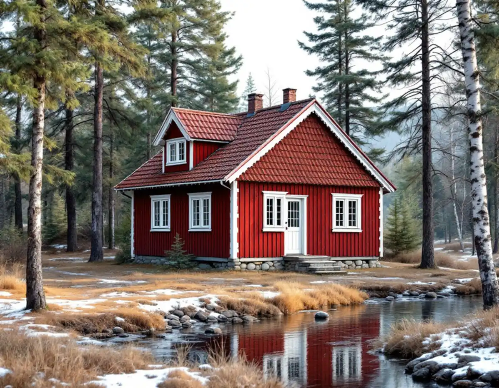
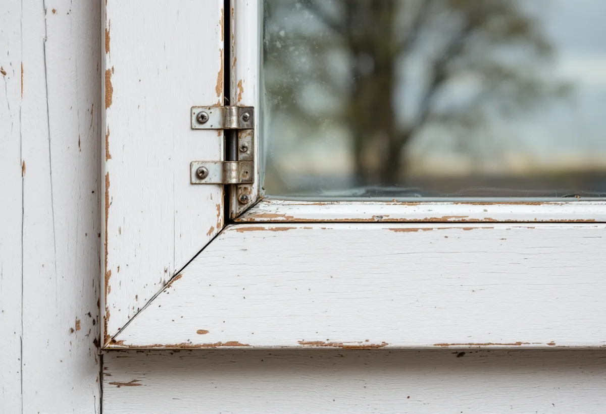
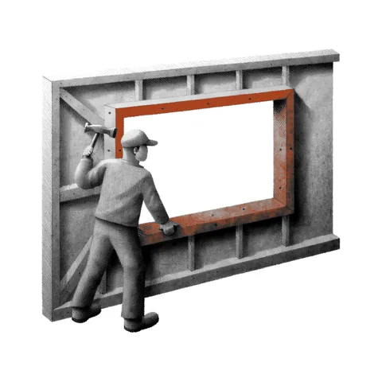

Besiktning
Varje fönster bedöms för sig: bottenstycken, kitt, färg, beslag och glas.

I Tyresös äldre hus är det ofta beslagen och bågarnas konstruktion som berättar mest om fönstrens ålder.
Beskriv jobbet kort.
Något blev fel. Kontrollera uppgifterna eller ring 08 12 410 276.
Vi tittar på jobbet på plats innan du får offert.
Du ser vad som ingår och vad det kostar.
Vi drar av ROT direkt och sköter ansökan.
Geal Entreprenad AB, Bromma. Org.nr 559303-7566.

Det är detaljer som lätt försvinner vid ett snabbt byte. Geal Entreprenad AB byter och renoverar fönster i Tyresö strand, Trollbäcken, Brevik och övriga kommunen, bedömer varje fönster för sig och lämnar ett skriftligt kostnadsförslag efter ett gratis platsbesök.
Inför en detaljplan inventerade Stockholms läns museum 2008 bebyggelsen i Solberga och delar av Raksta. Rapporten beskriver fönstren hus för hus. I Strömstugan vid Follbrinksströmmen har fönstren tre rutor per båge med pressade hörnjärn, en typ som enligt rapporten var vanlig under 1900-talets första hälft. Bågarna är kopplade och har invändigt raka uppställningsbeslag av 1800-talstyp.
Samma stuga visar hur ett hus byggs på i omgångar. De tillbyggda delarna har moderna enrutsfönster och en modern småspröjsad båge, och i vindsfönstren sitter en båge med två rutor där ett av fönstren har gångjärnsbeslag av sen 1800-talstyp.
I huset Forsby har fönstren sex rutor, tre per båge. Snickerierna är i huvudsak nytillverkade, men ett antal äldre bågar har kvar gångjärnsbeslag från sent 1800-tal. Rapporten räknar just de bågarna, tillsammans med kakelugn, rörspis och äldre snickerier, till det som tydliggör husets byggnadshistoria.
Riksantikvarieämbetets skrift om fönster beskriver hur de kopplade bågarna kom in i byggandet. C A Flodquist och C G Hallberg fick 1889 patent på ett fönster där två bågar med varsitt glas hålls ihop med gångjärn och hakar, så att innanfönster inte längre behövdes. Från sekelskiftet blev de kopplade, inåtgående bågarna allt vanligare i städerna.
När de kopplade bågarna öppnas inåt försvinner mittposten, och den inre bågen bär den yttre. Därför gjordes innerbågen kraftigare. Enligt skriften var de traditionella okopplade fönstren ändå vanliga i förorternas egnahemsbebyggelse ännu i slutet av 1920-talet, och med funktionalismen försvann spröjsen ur de kopplade bågarna.
För ett hus i Tyresö betyder det att två fönster som ser lika ut utifrån kan vara byggda på helt olika sätt. Om innerbågen ska få ett energiglas är det just den bärande bågen som får mer tyngd, och Boverket påminner om att båge, gångjärn och beslag måste klara det.
Riksantikvarieämbetet förklarar att fasta fönster egentligen inte behövde några beslag. När bågarna blev öppningsbara måste de förstärkas med hörnjärn och förses med gångjärn samt stängnings- och uppställningsbeslag. I början var beslagen smidda, och hörnjärnet och gångjärnets övre del gjordes ofta i ett stycke.
Vid mitten av 1800-talet kom hörnjärn som stansades ur plåt, och senare även gjutna och formpressade beslag. De kopplade fönstren förde med sig koppelhakar mellan ytter- och innerbåge, och fönster utan mittpost fick en spanjolettstång som stängningsbeslag.
När vi renoverar bågar tar vi därför vara på beslagen, rengör dem och sätter tillbaka dem. Byts ett fönster helt kan de gamla beslagen ofta sparas till andra bågar i huset. Ska även fasaden runt fönstren lagas, läs om fasadrenovering i Tyresö.
Riksantikvarieämbetet råder att börja med en systematisk besiktning av varje fönster när det är oklart om de behöver vanligt underhåll eller större reparationer. Utan besiktning är det enligt skriften för lätt att döma ut fönster som går att bevara. Det är oftast bottenstyckena i karm och båge som skadas, och ofta räcker det att byta de skadade partierna.
Tyresö kommun skriver att nya fönster på ett en- eller tvåbostadshus inte kräver bygglov, men att ändringen ska göras varsamt och anpassas till byggnadens värden. Lov krävs om fastigheten ligger i ett kulturhistoriskt särskilt värdefullt område eller om byggnaden själv är särskilt värdefull. Kommunen påpekar också att uppdaterade underlag inte finns för alla områden, och erbjuder rådgivning och frivilligt bygglov.
Varje fönster bedöms för sig: bottenstycken, kitt, färg, beslag och glas.
Vi noterar om bågarna är kopplade eller okopplade och hur de öppnas.

03Du får veta vilka fönster som kan lagas, kompletteras eller behöver bytas.
Lagning, nya delar, energiglas och nya fönster redovisas skriftligt och separat.
Skadade partier byts, beslag rengörs och sätts tillbaka, nya fönster drevas och tätas.
Vi går igenom fönstren med dig och visar hur kitt och färg följs upp.
Skatteverket räknar både att reparera och att byta ut fönster i ett småhus som rotarbete, liksom att måla fönster. Avdraget är högst 30 procent av arbetskostnaden och högst 50 000 kr per person och år, och tillsammans med rutavdrag högst 75 000 kr.
Glasarbeten som görs i företagets egna lokaler ger inget avdrag, och inte heller material. Vi drar avdraget på fakturan.
Hur många bågar som kan lagas, hur stora delar av bottenstyckena som måste bytas, om beslagen ska rengöras och flyttas, om innerbågen ska få energiglas och hur många fönster som behöver ersättas helt. Efter ett gratis platsbesök får du förslaget skriftligt.
Byta eller renovera fönster.
Fönsterbyte i Stockholm →Takbyte, takbesiktning och plåtarbeten.
Takläggare i Tyresö →Solberga, Raksta och Brevik.
Takrenovering i Tyresö →VA-anslutning, vattenmätare och dagvatten.
Attefallshus i Tyresö →LTA-avlopp, källarbadrum och golvbrunn.
Badrumsrenovering i Tyresö →Startbesked, utstakning och slutbesked.
Byggföretag i Tyresö →Fritidshus som blivit helårshus på Brevikshalvön.
Fasadmålning i Tyresö →Timmerhus, fritidshus och villor i Tyresö.
Fasadrenovering i Tyresö →Fritidshus som blivit permanentbostäder.
Fönsterrenovering i Tyresö →Fritidshus som byggts om till villor.
Golvläggare i Tyresö →Slipa och spara gamla brädgolv.
Golvslipning i Tyresö →Stugor som blir helårshus.
Köksrenovering i Tyresö →Rödfärgade hus, stugor och interiörer i Tyresö.
Målare i Tyresö →Stuprör, rännor och beslag i Tyresö.
Plåtslagare i Tyresö →Stugor, altaner och tillbyggnader.
Snickare i Tyresö →Nytt tak med säker väg till skorstenen.
Takbyte i Tyresö →Ny tapet i rum med eldstad.
Tapetsering i Tyresö →Byggrätten i omvandlingsområdena.
Tillbyggnad i Tyresö →Rivningsavfallet, arkivet och eldstaden.
Totalrenovering i Tyresö →Eller ring 08 12 410 276, mån–fre 08–17.
Beskriv jobbet kort.
Något blev fel. Kontrollera uppgifterna eller ring 08 12 410 276.